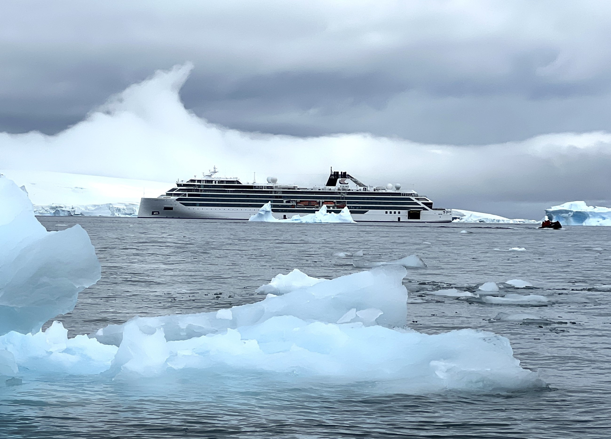
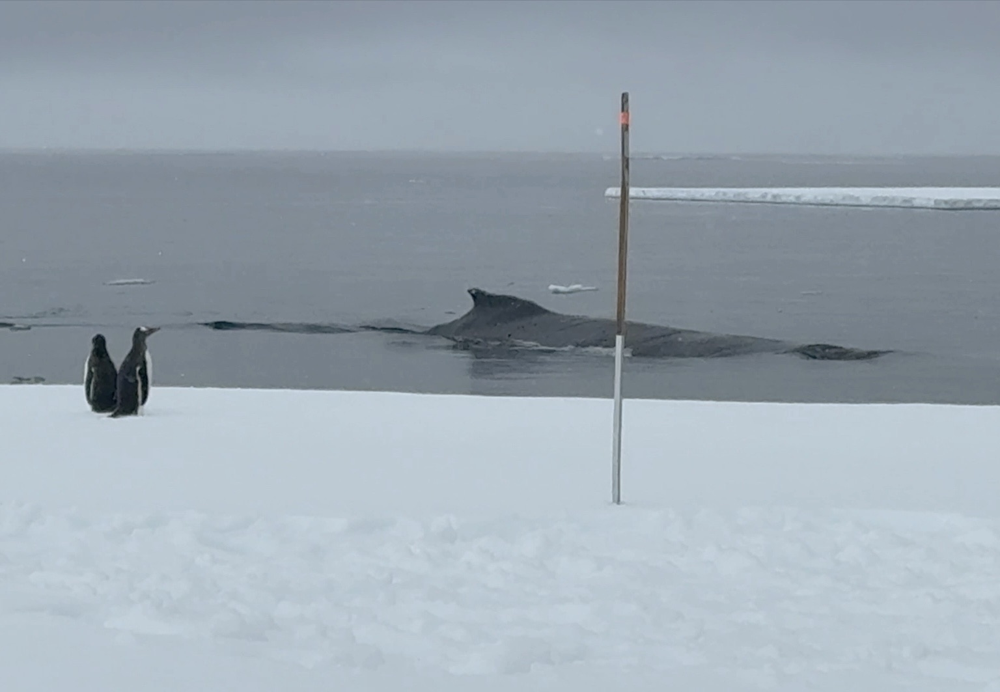
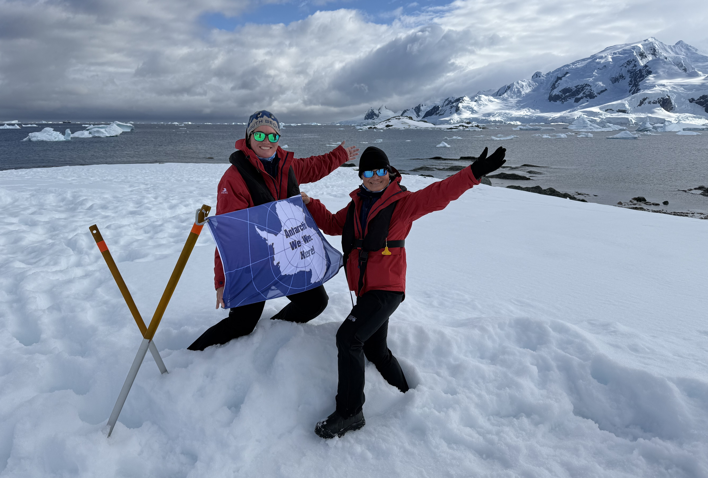
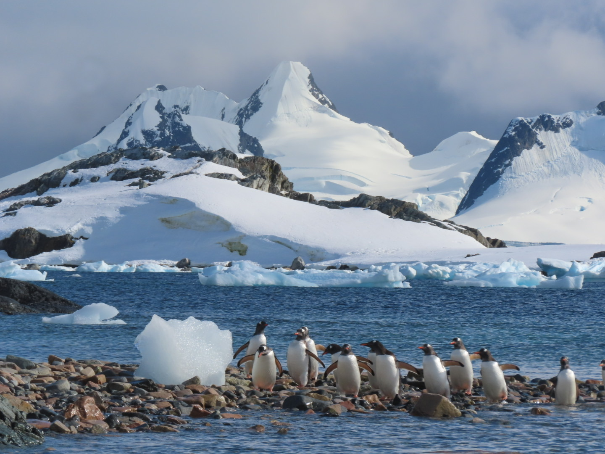
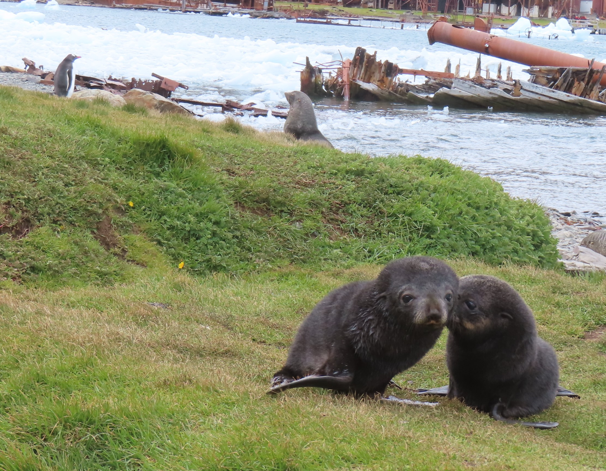
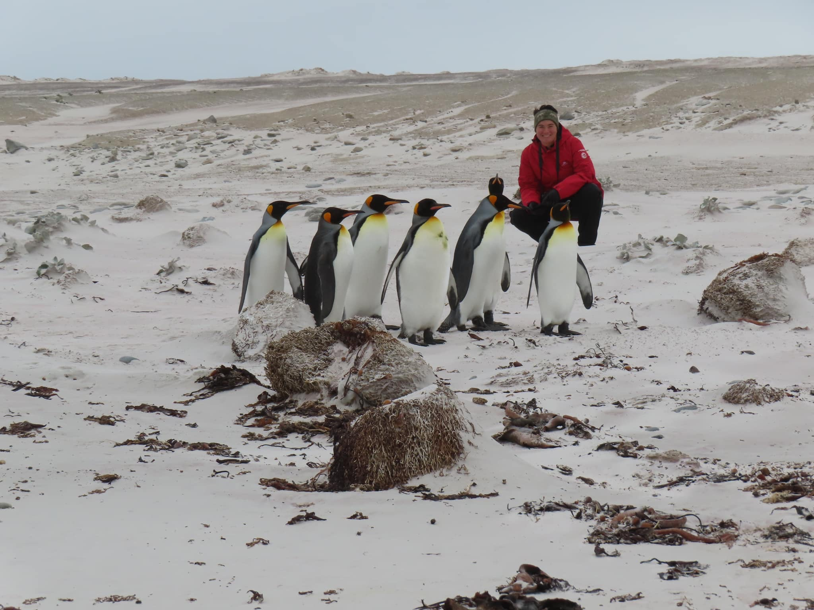
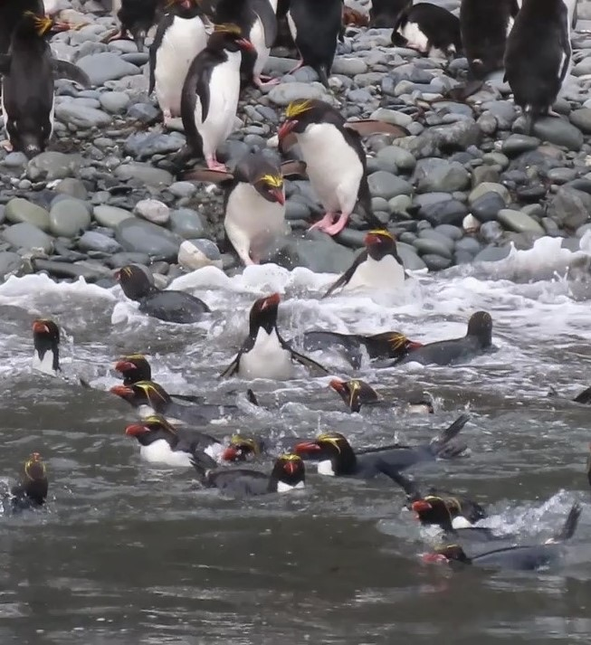
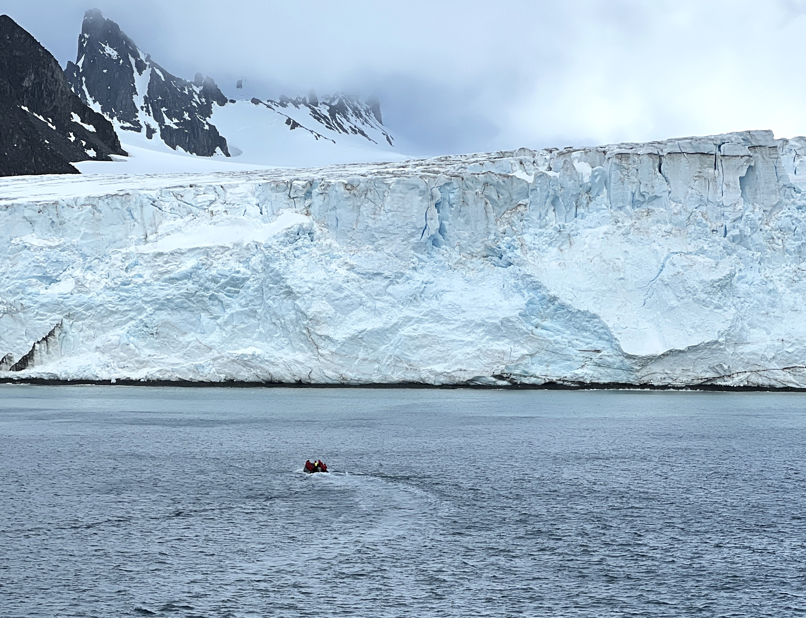
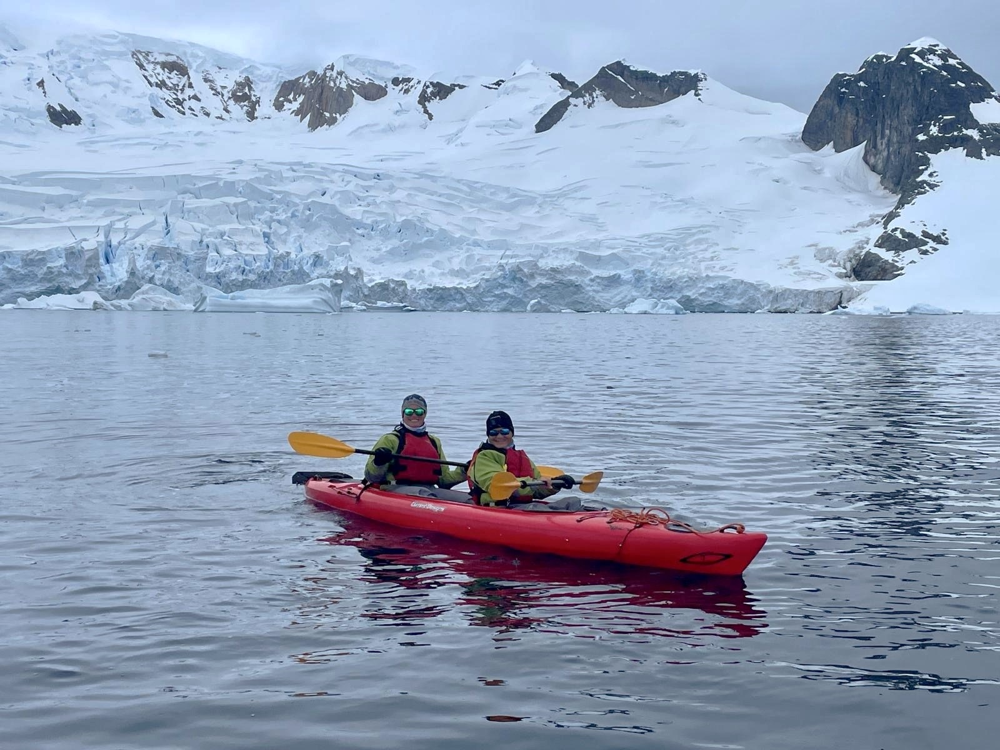
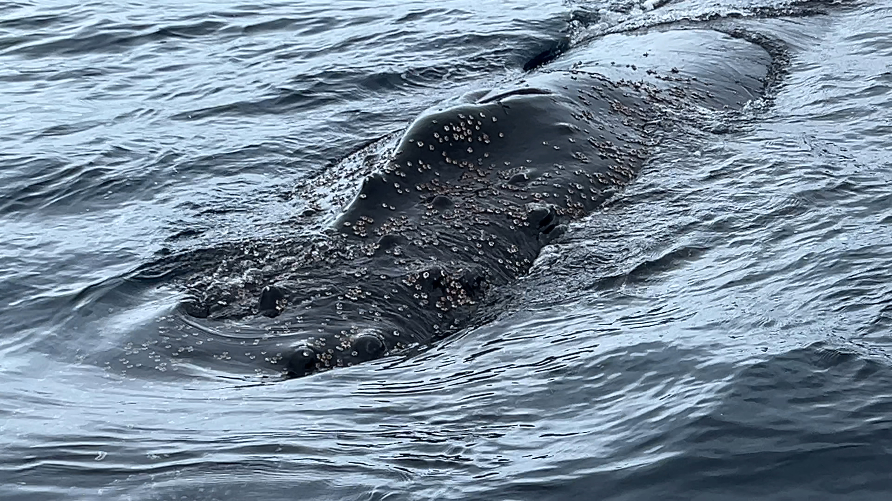

People Who Like to Travel Solo
It can be frustrating to navigate travel as a solo traveler.
By cruise, you can explore along the coastline of this awe-inspiring continent, with expeditions to paddle your own kayak, explore by zodiac (think comfortable, inflatable speedboats), spend a night on land under the stars, take a submarine into uncharted waters, and even walk on sea ice. The most discerning of travelers can even take a private jet and spend time on the continent in luxury lodges.
If you have time, we strongly recommend visiting the Falkland Islands and South Georgia while you're in the area. Not only will this let you bypass the infamous Drake Crossing (once--you still have to take it coming back!), but you'll see hordes of King Penguins and other stunning vistas you won't find in Antarctica itself.
Depending on your travel goals and style, there are wonderful expedition cruise companies to choose from: Viking, Quark, Seabourn, National Geographic-Lindblad, HX Expeditions, and many more. Let us help you find the perfect sailing.
Of all of our travels, Antarctica took us the most by surprise with how much we loved it. We believe this is a voyage anyone with an adventurous spirit will love.
Read Mei-Mei's Antarctica blog post: Is Antarctica calling you? Here's everything you need to know.
Check out Regan's trip report about our experience.
I am interested in going to Antarctica
Some of our preferred partners
Perfect for avid photographers, science enthusiasts, people who want to maximize their time on land, solo travelers, and families with kids, National Geographic-Lindblad is at the top of the expedition game. They're also one of several companies that offers "fly the Drake" sailings.
For an ultra-luxury experience on one of the top cruise lines in the world, consider Seabourn, where every stateroom has a verandah, service is excellent, the dining is exceptional, drinks are included as well as gratuities, and special Seabourn experiences provide an etra touch.
For stunning new polar expedition ships, fantastic expedition crew, luxury accommodations, and a passenger count of only 130, guaranteeing you maximum time on land, check out Aurora Expeditions.
One of the most prominent names in expedition sailing is Quark Expeditions, and for good reason. Their exceptional expedition teams, strong expedition spirit, and beautiful new ships holding just 200 passengers make them a prime choice. They also offer some "fly the Drake" options.
Beautiful ships, luxury accommodations, well-priced "Fly the Drake" options, and exceptional expedition crews set Silversea apart.
Looking for a larger ship and more relaxed experience? Consider Viking Expeditions, known for luxury accommodations, phenomenal food, a strong expedition crew, and Special Operations Boats--a great way to get up close and personal with wildlife without sacrificing comfort.
Highlights from our December 2024 expedition











